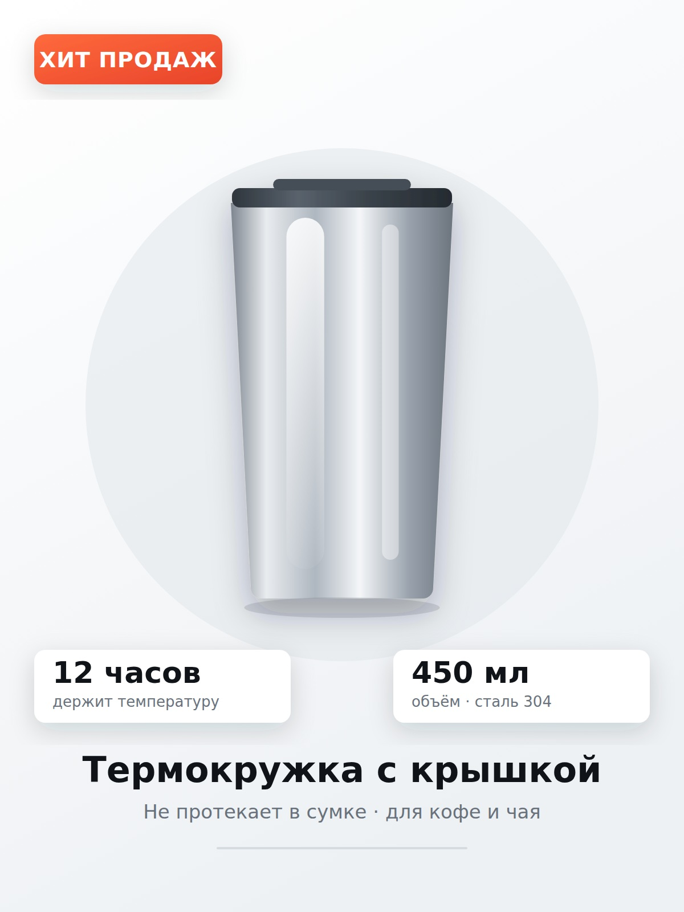
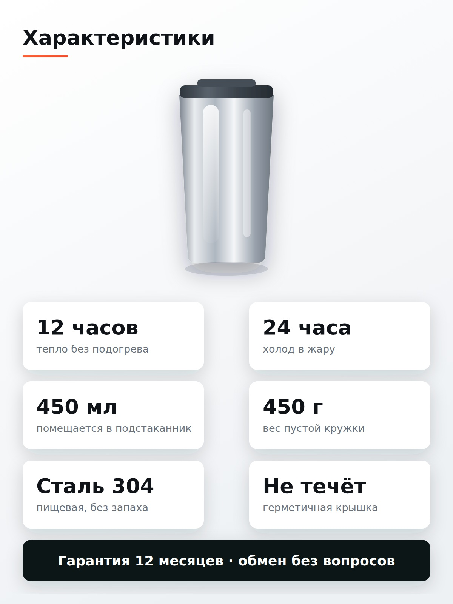
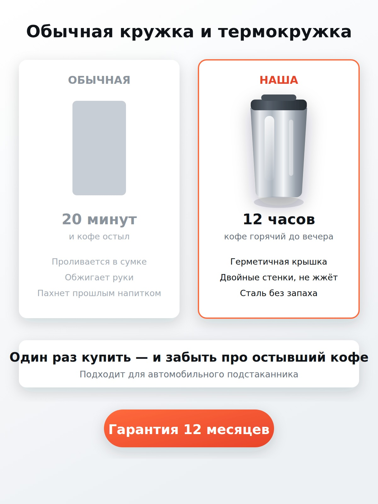

01 / 03 — главный кадр
Что это и какого размера
Первый кадр в выдаче отвечает на два вопроса ещё до клика: что за товар и на что он способен. Название и объём — крупно, внизу, без прищура.
Инфографика · Ozon и Wildberries
Три кадра под требования маркетплейсов: пропорция 3:4, безопасные поля по краям, кегль подписей, читаемый с телефона в ленте выдачи.
Демонстрационный комплект. Товар вымышленный, кружка — рендер, не фотосъёмка реального изделия.

01 / 03 — главный кадр
Первый кадр в выдаче отвечает на два вопроса ещё до клика: что за товар и на что он способен. Название и объём — крупно, внизу, без прищура.

02 / 03 — характеристики
Шесть плашек вместо простыни текста в описании — то, что обычно ищут в отзывах и вопросах, вынесено на сам кадр.

03 / 03 — сравнение
Приём, который проще любого текста: слабые стороны обычной кружки и то, что решает термокружка, — в одном кадре, без пролистывания.